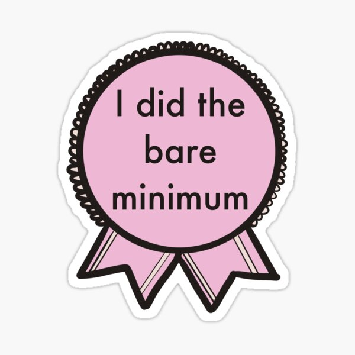

The best way to waste YOUR valuable time
Step One: Procrastinate
Why try to do any work right now? When you can do them later. Its ok you CAN do them Tomorrow. Or even After Tomorrow. Don't Stress yourself and just wait until last minute to do all your work. So instead of 1 Assignment each day you can do 7 at the end of the week. But if u feel lazy at the end of the week. You can just do them Next week And double the work :)
Step Two: Dont give your full effort
yep. You heard it, Just try to do the bare minimum. Dont go for an A+ go for a passing grade. Instead of writing every detail in that one story you can just type 4 sentences if that is what is asked for.
